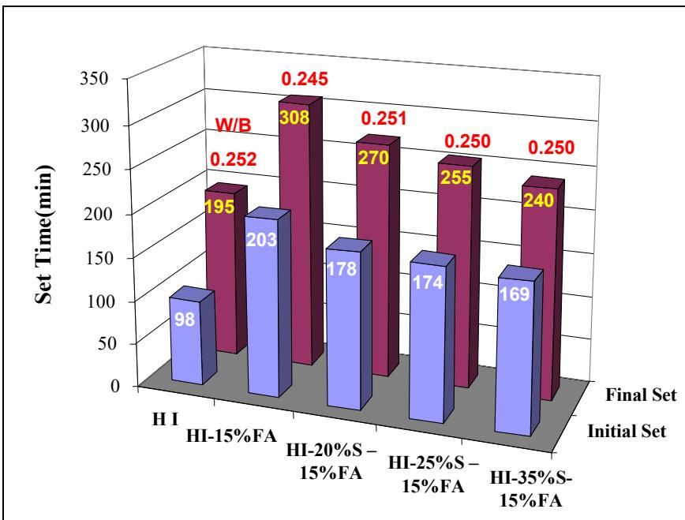
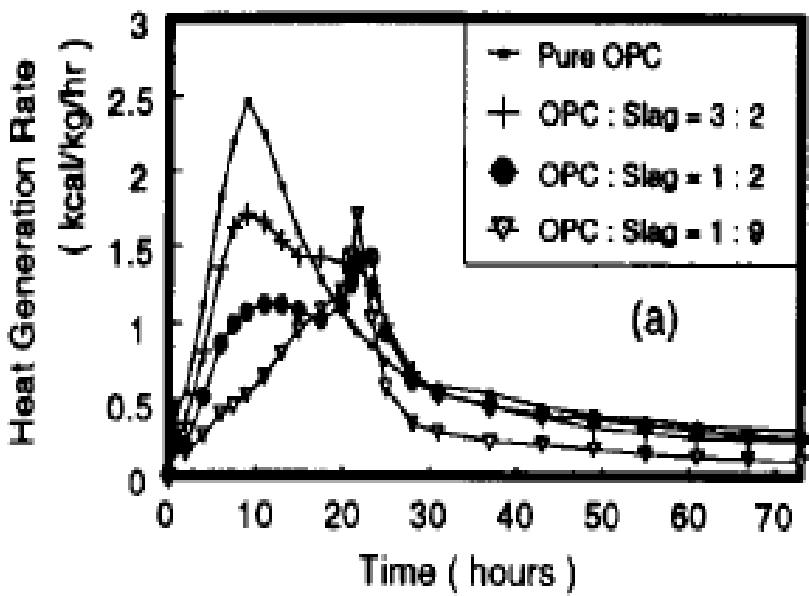
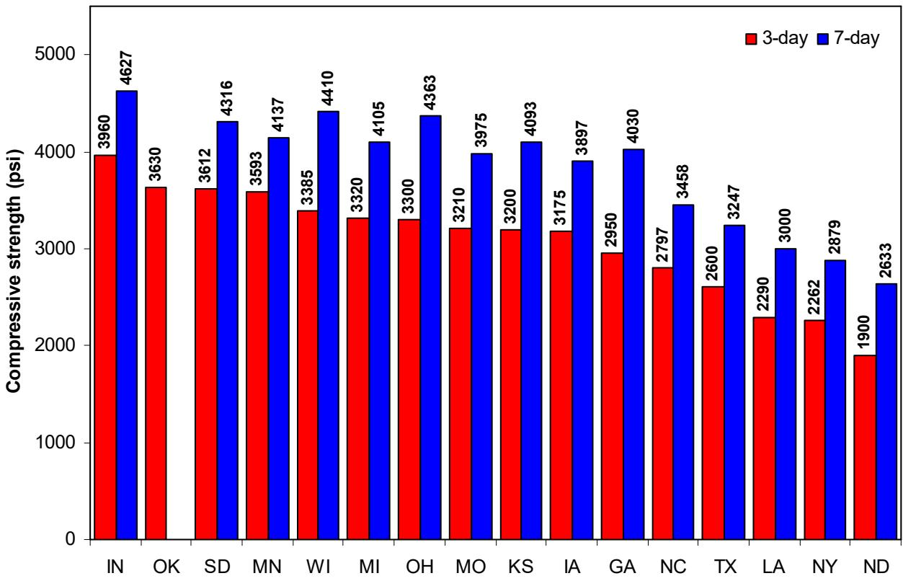
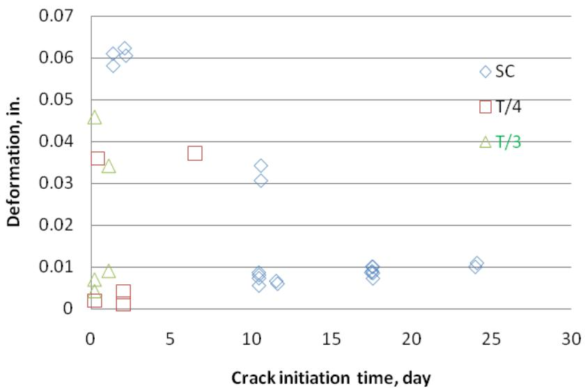
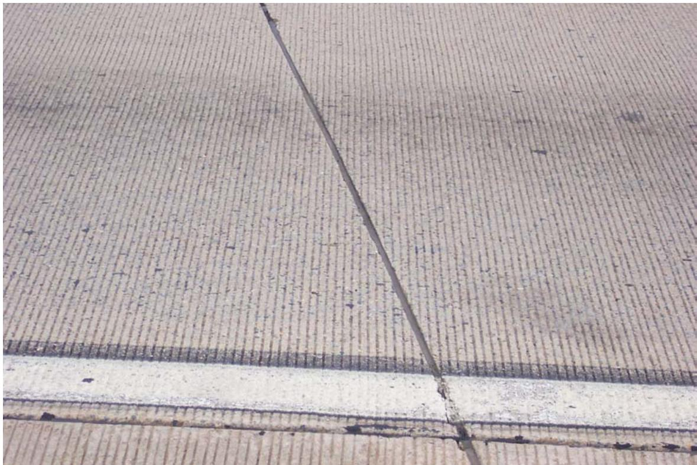
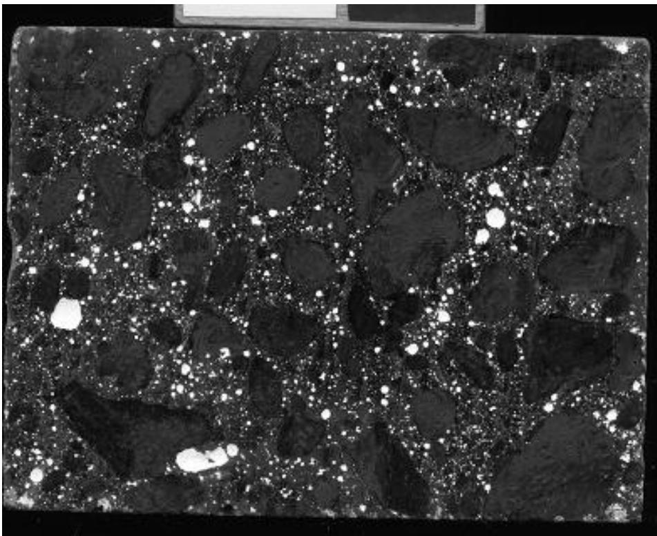
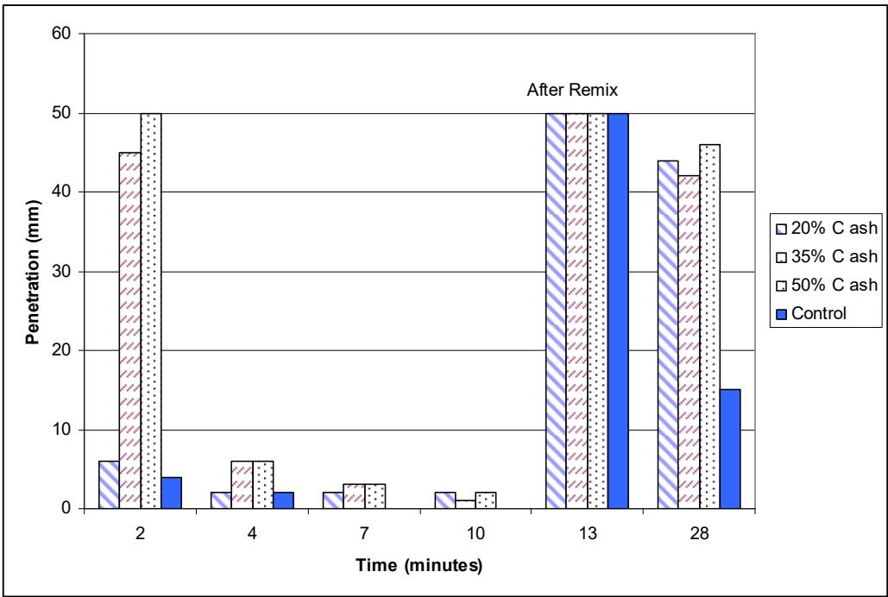
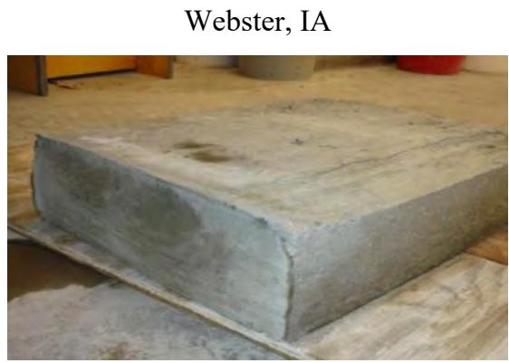
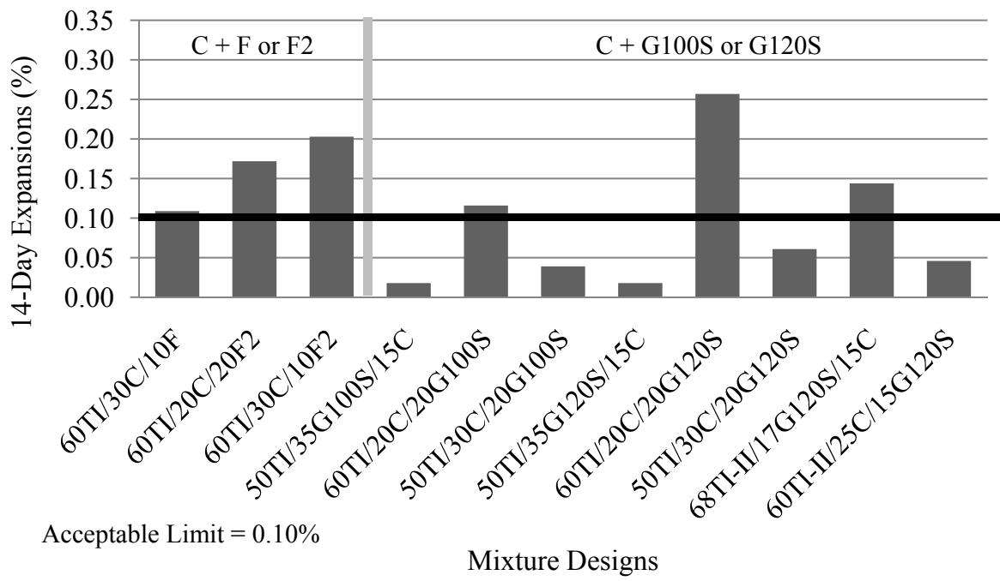

Ground Granulated Blast-Furnace Slag
Ground granulated blast-furnace slag is a primary member of supplementary cementitious materials, which are industrial by-products commonly blended with ordinary portland cement to enhance concrete properties [4]. These materials function as supplementary cementitious materials by providing latent hydraulic properties that contribute to strength development through hydraulic or pozzolanic activity when reacting with components like calcium hydroxide [4]. Specifically, it is an industrial by-product from iron production, ground to a fine powder for use as a supplementary cementitious material in concrete. Slag is not a pozzolan — it is cementitious (sets and hardens on its own), though less rapidly than portland cement. The term “slag cement” is increasingly used. [1] Consequently, ground granulated blast-furnace slag serves as a key component in modern concrete practice alongside other supplementary cementitious materials such as fly ash and silica fume [1].
Sources (21)
Production
- Molten slag is rapidly quenched (granulated) then ground to fine particle size
- 1999: ~1.7 million tons produced in the US; expected to increase to ~2.5 million tons by 2005
- Demand exceeds current production
GGBFS is a predominantly glassy material that requires rapid quenching during granulation to maintain its hydraulic properties. It has been utilized in construction for approximately 150 years, though national availability only increased recently due to expanded production. [1]
Classification
ASTM C 989 breaks slag into three grades (80, 100, 120) based on compressive strength of mortar cubes (slag activity index test). Higher grade = more rapid strength gain. CSA specification recognizes a single grade (Type S). [1]
The ASTM specification for GGBFS is C 989, which categorizes the material into three grades (80, 100, and 120) based on the compressive strength of mortar cubes in a slag activity index test. The CSA specification recognizes only a single grade designated as Type S. [1]
In ternary mixtures, the grade 120 slag cement tends to exhibit decreased flow and a shorter time of set compared to grade 100 slag cement, likely due to its finer grind. [2]
Slag content in blended cements typically varies by approximately 5% to 10% relative error, with measured mean values closely aligning with nominal specifications [3].
 Bulk chemical composition ranges for some common supplementary cementitious materials (from reference 5) [1]
Bulk chemical composition ranges for some common supplementary cementitious materials (from reference 5) [1]
Properties (Holcim and Lafarge Slags)
- Similar chemical composition: CaO+SiO₂+Al₂O₃ ≈ 83%
- Hydration modulus (CaO+MgO+Al₂O₃)/SiO₂ = 1.5 (threshold for sound hydration > 1.4)
- Mean particle size: 8.462 µm (Lafarge), 8.859 µm (Holcim)
- Irregular, angular shape from grinding → increases water demand
- Specific gravity: ~2.9
When used alone, GGBFS does not function as a water-reducing agent like fly ash; however, combining slag with fly ash in ternary cements can restore flowability to levels comparable to ordinary portland cement concrete. [4]
Effects in Concrete
- Irregular particles absorb water and increase friction → increases water demand
- Does not delay set time; may slightly accelerate initial set
- Reduces maximum hydration temperature
- Combined with fly ash in ternary cements → water demand similar to OPC
- Lower early strength in cold weather but comparable at high temperatures
- Datum temperature and activation energy increase with slag replacement
- Typical replacement: 20%–60%+; lower range for setting constraints, higher range for ASR/sulfate resistance
The set time behavior of slag-blended cements in ternary mixtures depends on the clinker source: Holcim slag can reduce extended set times caused by fly ash, whereas Lafarge slag blended with 15% fly ash consistently increases set time as SCM content rises. [4]

Set time for Holcim cement [4]GGBFS replacement levels typically range from 20% to over 60%, with lower percentages used when setting time or hardening constraints are limiting factors. Higher replacement ratios are commonly specified when enhanced resistance to alkali-silica reaction (ASR) or sulfate attack is required. [1]
The hydration of slag-blended cement exhibits two distinct heat generation peaks: the first corresponds to portland cement hydration and occurs at the same time as in pure OPC, while the second peak is caused by the independent reaction of slag once sufficient Ca(OH)2 is released from the cement. [5]

Effect of slag on hydration (adapted from Kishi and Maekawa 1994) [5]Finer grinding of slag accelerates the peak of cement hydration because the finely ground particles consume Ca2+ ions from the liquid phase more rapidly. [5]
 Heat of hydration with specific surface varied (adapted from Lerch et al. 1946) [5]
Heat of hydration with specific surface varied (adapted from Lerch et al. 1946) [5]
Some studies report a setting time delay for slag-blended cement, with approximately ten to twenty minutes of retardation observed for each 10% addition of slag. [5]
In ternary mixtures designed to mitigate alkali-silica reactivity (ASR), GGBFS works synergistically with other supplementary cementitious materials like fly ash or silica fume, allowing for higher total SCM mitigation without the risks associated with high volumes of a single SCM. [6]
In ternary mixtures containing Type I cement, GGBFS grade 100 slag, and another cementitious material, shrinkage values ranged from 16.2% to 33.0% less than plain cement, with a mean shrinkage percentage of 12%. One specific mixture (50TI/30F/20G100S) exhibited a 1.2% higher shrinkage value compared to the control cement. [7]
Ternary mixtures containing Type I cement and GGBFS grade 120 slag demonstrated mean shrinkage percentages of 1.0%, with values ranging from 12.6% to 37.4% less than plain cement, indicating that higher-grade slag can significantly reduce drying shrinkage in specific blend configurations. [7]
The optimum fly ash content for chloride resistance durability in aggressive environments was determined to be about 40% replacement rate, while the replacement rate dropped to 30% in mild chloride environments. [7]
The maturity method can be applied to concrete containing GGBFS to estimate in situ compressive strength, allowing earlier form removal and faster opening of structures like bridge decks to traffic compared to conventional cylinder testing. [8]
GGBFS replacement rates up to 55% can result in compressive, flexural, and splitting tensile strengths that equal or exceed baseline concrete after 14 days. [8]

Average Three- and Seven-Day Compressive Strengths for Each State [8]Incorporating GGBFS into concrete significantly improves resistance to chloride ion penetration. [8]
The presence of slag in concrete mixes has been identified as a primary factor contributing to delayed cracking at early entry sawing joints, with some pavements showing no joint cracks for up to nine months after construction. [9]
 Contrast in joints with different saw cut depths [9]
Contrast in joints with different saw cut depths [9]
In ternary mixtures containing slag, fly ash, and portland cement, early entry sawing joints may fail to crack for extended periods, sometimes requiring contractors to repeat sawing operations weeks after initial construction. [9]

Relation between crack time, initiation time, and deformation at the joints [9]Mixtures containing slag cement exhibit slightly increased bleeding compared to controls, whereas metakaolin decreases bleeding in similar ternary systems. [2]
GGBFS reduces autogenous shrinkage in concrete by lowering the internal pore relative humidity gradient during hydration, as its slower reaction rate delays capillary water consumption compared to pure portland cement. [10]
Concrete containing GGBFS exhibits lower diffusivity during external drying processes because the material’s refined pore structure restricts moisture migration from moisture-rich sections to moisture-poor sections. [10]
Scaling Concern & Field Evidence
The TRB (1990) review noted that concrete with slag cement has good freeze-thaw performance but scaling may increase. Laboratory scaling tests (ASTM C 672) have historically shown poor agreement with field observations for slag concrete — a discrepancy that motivated the Schlorholtz & Hooton (2008) pooled-fund field study. [11]
Field Study Findings (28 sites across 6 states)
- Slag content from 20% to 50% replacement across pavement and bridge deck sites
- Only 1 of 10 tested sites exceeded the 1.5 lb/yd² scaling mass loss threshold
- Retempering and high w/cm were stronger predictors of scaling than slag content
- Bridge deck cores tended to lose more mass than pavement cores
- RCP values (590–1,580 coulombs) showed no direct relationship to slag content
- Ternary mixtures (slag + portland cement + fly ash or silica fume) were the most common formulation, used in 8 of 13 cored sites [11]
The diffusion coefficients estimated for slag-containing concrete cores ranged from about 5.6E-12 m²/s to 1.4E-13 m²/s, indicating the material’s capacity to restrict chloride ion ingress in field conditions. [11]
Petrographic examinations of field cores revealed that retempering was a primary construction-related factor contributing to scaling, with four out of seven scaling sites showing evidence of this practice. [11]
 Example of retempering noted via petrographic examination [11]
Example of retempering noted via petrographic examination [11]
In ternary mixtures, silica fume is frequently combined with slag and portland cement to enhance durability, particularly in bridge deck applications where higher cementitious material contents are utilized. [11]
The inclusion of slag cement reduces the severity of moderate surface scaling observed in concrete mixture designs tested for freeze-thaw resistance. [2]
In terms of durability and service life, Delaware highway sections utilizing 25% to 50% slag replacement have demonstrated no evidence of surface scaling after approximately 10 to 17 years of service in heavily salted environments [11].

Delaware SR 1, northbound (between Christiana Road and I-95) [11]Concrete containing slag cement can exhibit surface scaling when exposed to deicer salts, particularly in bridge deck applications where mass loss during ASTM C 672 testing may exceed 1.5 lbs/yd² [11].
 Overview of Route 351 bridge over the Quackenkill [11]
Overview of Route 351 bridge over the Quackenkill [11]
Concrete containing slag cement generally exhibits good long-term strength and durability characteristics, but concerns regarding deicer scaling resistance have been raised when the dosage of slag exceeds 50% of the total cementitious material in the mixture; much of this concern appears to be based on laboratory scaling tests based on ASTM C 672, despite indications that such mixtures often perform well in the field [12].
Rapid chloride permeability testing on slag-containing concrete yields charge passed values ranging from approximately 590 coulombs to 1,580 coulombs [11], and the chloride diffusion coefficients estimated for concrete containing slag cement range from about 5.6E-12 m²/s to 1.4E-13 m²/s [11].
 Example of chloride profile test results (before and after scaling tests) [11]
Example of chloride profile test results (before and after scaling tests) [11]
Field surveys indicate that construction-related issues play a bigger role in observed surface scaling performance than the amount of slag in the concrete mixture [12], and research indicates that construction practices, including finishing and curing procedures, significantly influence salt scaling performance in slag-containing concrete, often playing a larger role than the specific amount of slag replacement [13].
2011 Ternary Concrete Study
The 2011 FHWA Phase II study tested Grade 100 and Grade 120 GGBFS in concrete at replacement levels of 20%–50% combined with other SCMs. Key findings: [14]
- GGBFS in ternary combinations with Class F or F2 fly ash provided excellent sulfate resistance (ASTM C1012) across all formulations
- Higher GGBFS grades require more air-entraining admixture (AEA) to achieve target air content in fresh concrete
- The Type IS(20) cement (80% TI/II + 20% Grade 100 GGBFS) performed well in ternary combinations for both ASR and sulfate mitigation
- No barriers to adoption with slag in ternary mixtures were identified; practice recommendations developed for field use
Phase 2 Laboratory Scaling Study (Hooton & Vassilev 2012)
A comprehensive laboratory evaluation of 16 concrete mixtures confirmed several important interactions between slag cement and deicer scaling:
- Direct relationship between slag content and scaling — consistently observed across all three test methods (ASTM C672, BNQ, BNQ+VDOT). Higher slag content increased scaling regardless of test method [13]
- w/cm reduction more effective than slag reduction — reducing w/cm from 0.42 to 0.38 in 50% slag mixes produced the best scaling resistance across all tests, indicating that pore structure refinement can offset slag’s scaling vulnerability
- Cement alkali level matters — low alkali (LA) cement mixes outperformed high alkali (HA) in both compressive strength and scaling resistance regardless of slag grade or content [13]
- Grade 100 vs 120 slag: differences in compressive strength were inconclusive; Grade 120 performed slightly better in RCPT and scaling with HA cement, but Grade 100 performed better with LA cement in some cases
- AEA selection critical — Micro Air® outperformed Vinsol Resin for slag cement concretes: smaller bubbles, lower spacing factors, no increase in AEA demand [13]
- Test method dependency: ASTM C672 produced the lowest scaling levels at >35% slag (contrary to prior findings), attributed to 4% CaCl₂ forming weaker ice bonds than the 3% NaCl used in BNQ tests
- Carbonation increases with slag content, while chloride penetration decreases — mixes with >2 mm carbonation performed poorly in scaling
- Proposed draft ASTM WK 9367 incorporates wood screed finishing, one-dimensional freezing, and optional VDOT accelerated curing as a more suitable alternative to ASTM C672 for evaluating slag cement concretes
Reducing the water-to-cementitious material ratio from 0.42 to 0.38 in slag-containing concrete significantly lowers charge passed during Rapid Chloride Permeability Testing (RCPT), with 50% slag replacement reducing coulomb values to below 1,400 at seven days and approximately 700 at fifty-six days. [13]
Low alkali cement mixtures consistently outperform high alkali cement in compressive strength regardless of slag grade or content, with low alkali cement combined with Grade 100 slag developing approximately 10 MPa higher strengths than equivalent high alkali mixes. [13]
The use of Micro Air® air-entraining admixture produces smaller air bubbles than Vinsol resin, which improves load distribution and results in higher compressive strength despite higher overall air content. [13]

Scanned (top) sample of Mix #15: 0.65HA 0.35SG120 0.42wc with 8.96% air content and 0.133mm spacing factor, using 106.7 mL/m3 of Micro Air® AEA [13]Accelerated curing regimes consisting of seven days moist curing at 23°C followed by twenty-one days at 38°C have a marginal positive effect on RCPT results for slag concrete, unlike the large reductions observed in fly ash concretes. [13]
Phase 3 Repeatability Study (Taylor & Wang 2014)
A follow-up repeatability study tested 28 mixtures at Iowa State University using similar materials to the Phase 2 study, with both ASTM C672 and the new method. Key findings: [12]
 Comparison between data from new test method conducted in two labs for standard curing [12]
Comparison between data from new test method conducted in two labs for standard curing [12]
- Similar trends observed between ISU and University of Toronto labs, but inter-lab correlation was not as good as desired — procedural differences (28-day vs. 14-day wet curing, drying step after VDOT curing) affected results
- Correlation between slag content and scaling was less marked than in Phase 2, suggesting sensitivity to curing and finishing conditions
- Spacing factor remained a meaningful predictor of scaling — increasing spacing factor reflected better scaling performance in both test methods
- Air content alone was a poor predictor of scaling performance
- AVA vs. C457 spacing factor: poor correlation between the two measurement methods — consistent with earlier AVA studies
- The study recommended submitting the proposed method to ASTM with a round-robin exercise to develop precision and bias statements
The correlation between mass loss and visual rating was generally poor in scaling evaluations of concrete mixtures containing slag cement. [12]
A round-robin exercise is required to develop precision and bias statements for the proposed alternative test method, with training potentially needed to ensure laboratory staff conduct tests as intended. [12]
Energetically Modified Cement (EMC) Technology
Energetically Modified Cement (EMC) technology involves intensively grinding and activating cement with pozzolans like slag to create submicrocracks and microdefects that allow deeper water penetration, thereby utilizing a higher percentage of the binding capacity without chemical additives. This mechanical activation process enables EMC blends containing 20–40 percent fly ash or slag to achieve a 10 percent reduction in water-cement ratio compared to conventional blended cements, resulting in higher long-term strength and slightly improved sulfate resistance. [15]
A 5 percent replacement rate with silica fume in high-performance concreting applications produces no noticeable effect on the heat signature when compared to lower replacement rates. [2]
In ternary systems, slag cement suppresses peak temperatures during hydration, while mixtures containing high alkali cement exhibit notably higher temperature rises. [2]
 Temperature data for ternary mixtures with 35% slag cement [2]
Temperature data for ternary mixtures with 35% slag cement [2]
Using 35 percent slag cement in ternary mixtures reduces early-age strength at three days across various cement systems, whereas a 25 percent dosage has a less pronounced effect on early strength. [2]
Bassanite-Induced False Set
The primary sulfate mineral present in blended cements containing slag is bassanite, which can cause severe false set in laboratory mixtures but results in less pronounced effects when combined with fly ash. [3]

Illustration of how fly ash can influence the false set behavior of a mixture [3]Delivery Method Equivalence
Concrete delivered via dump trucks exhibits slump, slump-loss, and air content properties that are similar to those delivered by agitator trucks, supporting their use as viable delivery units. [3]
Diurnal Set Time Variation
Mortar set times for slag-blended concretes vary with placement time, with early morning placements setting and hardening slower than afternoon placements by over one hour. [3]
Slag Aggregate Properties
When used as a coarse aggregate in concrete pavements, GGBFS can contain metal inclusions that may corrode over time, initiating cracking that allows water ingress into the concrete matrix. [6]
Slag in Self-Consolidating Concrete
In self-consolidating concrete (SCC) mixtures designed for slip-form paving, replacing portland cement with granulated blast furnace slag at levels of 10% to 20% allows for a 24% reduction in total cement content while maintaining required flowability and green strength. This approach reduces the high cementitious content typically associated with SCC, which can otherwise lead to increased costs and shrinkage cracking. [16]

Mini-paver results of SFSCC candidates [16]When used as a replacement for portland cement in self-consolidating concrete, granulated blast furnace slag helps maintain sufficient green strength and shape stability after demolding, unlike fly ash replacements which can reduce green strength to near zero without additional stabilizers. This makes slag a more effective binder than fly ash for maintaining the structural integrity of fresh concrete during slip-form paving operations. [16]
 Effect of mineral and chemical admixtures on flowability and green strength of fresh concrete with small-sized aggregates [16]
Effect of mineral and chemical admixtures on flowability and green strength of fresh concrete with small-sized aggregates [16]
Slag in Pervious Concrete
In pervious concrete mixtures containing slag and fly ash as supplementary cementitious materials, a combination of 35% slag and 15% fly ash was selected to balance early strength development with the potential for greater long-term strength gain from the fly ash. [17]
Pervious concrete mixtures containing at least 25% slag demonstrated higher seven-day tensile strengths compared to 100% portland cement mixtures while maintaining similar compressive strength values. [17]
![Effects of SCMs on strength (B24″x″-S10-CS1.5-w/c0.29) Effects of SCMs on strength (B24[″x″]-S10-CS1.5-w/c0.29) [17]
{kind=link}
The highest seven-day compressive and tensile strengths in pervious concrete were achieved with a mixture containing 50% slag, reaching 23.7 MPa (3,440 psi) and 2.7 MPa (390 psi), respectively. [17]
Reactivity and Alkali Release
In ternary mixtures containing Class C fly ash and slag, increasing the Class C fly ash replacement level from 20% to 30% while maintaining a constant 20% slag content significantly reduces ASR expansion. [14]

ASTM C1567 ASR expansion for mixtures containing Class C fly ash blended with Class F or F2 fly ash or Grade 100 or 120 GGBFS [14]When combined with Class F fly ash, slag replacement of up to 50% portland cement results in a final set time delay ranging from 52 to 109 minutes compared to a control mixture containing 65% Type I cement and 35% slag. [14]
Material Characterization
The chemical composition of the slag cement used in durability testing was characterized alongside Type I portland cement, Class F fly ash, and Class C fly ash to establish baseline material properties for the experimental program. [18]
In paste mixtures with fixed sand content at 15%, portable XRF devices were able to report supplementary cementitious material dosages reasonably well despite errors in mortar sample analysis. [19]
Ultrasonic Monitoring
Ultrasonic P-wave velocity measurements can be utilized to monitor the setting behavior and hardening process of concrete containing blast-furnace slag. [20]
Internal Curing Synergy
The presence of slag cement in concrete mixtures enhances the efficiency of internal curing when combined with lightweight fine aggregate, as the supplementary material promotes more complete hydration of the cementitious system. [21]
Concrete containing slag cement exhibits a lower chloride diffusion rate when subjected to internal curing conditions, with rapid chloride permeability testing results showing approximately 10% lower values compared to control mixtures without internal curing. [21]
Crack Development and Shrinkage
The use of slag in concrete mixes can significantly slow crack development at early entry sawing joints, sometimes preventing joint cracking for months after construction [9], while ternary cementitious materials combined with well-graded aggregate can reduce drying shrinkage, potentially contributing to delayed joint cracking in early entry sawing applications [9].
Field Performance and Applications
Iowa DOT engineers have achieved success with binary mixtures containing 20% to 35% slag replacement and ternary mixtures combining slag, portland cement, and Class C fly ash [11].
Laboratory Testing Limitations
Standard laboratory scaling tests such as ASTM C672 are often overly aggressive and provide misleading data for concrete containing slag cement, particularly at replacement levels exceeding 50 percent, because they do not account for the slower setting times and property development associated with SCMs [13].
 ASTM C672 exposure for Mix #13 (50%LA 50%SG120 0.42w/c) at 25 cycles where coarser sized pieces of scale were observed [13]
ASTM C672 exposure for Mix #13 (50%LA 50%SG120 0.42w/c) at 25 cycles where coarser sized pieces of scale were observed [13]
Regulatory Restrictions and Practice
Some agencies limit slag usage to 25 percent for bridge decks exposed to deicers, although studies suggest this restriction may be inappropriate given proper field performance [13].
Performance Metrics and Field Analysis Methods
To address these limitations, alternative laboratory test methods have been developed to better represent field performance for concretes containing slag cement in salt scaling environments, including modifications to existing protocols like those used by the Quebec Ministry of Transportation [12].
One such method, the BNQ NQ 2621-900 test method, involves exposing concrete slabs to 56 cycles of freezing in a laboratory setting where specimens receive only 14 days of moist curing prior to testing; this accelerated regime is designed to evaluate scaling resistance more effectively for concretes incorporating supplementary cementing materials compared to standard procedures [13].
 Temperature cycles 42 mm (1.7 in.) below the ponded surface of instrumented slab [13]
Temperature cycles 42 mm (1.7 in.) below the ponded surface of instrumented slab [13]
See also
References
- S. Schlorholtz, "Development of Performance Properties of Ternary Mixes: Scoping Study (Phase 1)," Center for Portland Cement Concrete Pavement Technology, Iowa State University, Ames, IA, Rep. DTFH61-01-X-00042 (Project 13), 2004. [Online]. Available: https://www.cptechcenter.org/wp-content/uploads/2018/03/ternary_mixes.pdf
- P. Taylor, P. Tikalsky, K. Wang, G. Fick, and X. Wang, "Development of Performance Properties of Ternary Mixtures: Field Demonstrations and Project Summary," National Concrete Pavement Technology Center, Ames, IA, Rep. TPF-5(117), 2012. [Online]. Available: https://www.intrans.iastate.edu/wp-content/uploads/2018/03/ternary_final_w_cvr.pdf
- S. Schlorholtz, K. Wang, J. Hu, and S. Zhang, "Materials and Mix Optimization Procedures for PCC Pavements," CTRE, Iowa State University, Ames, IA, Rep. TR-484, 2006. [Online]. Available: https://www.intrans.iastate.edu/wp-content/uploads/2018/03/mco-final.pdf
- K. Wang and Z. Ge, "Evaluating Properties of Blended Cements for Concrete Pavements," Department of Civil, Construction and Environmental Engineering, Iowa State University, Ames, IA, 2003. [Online]. Available: https://www.intrans.iastate.edu/wp-content/uploads/2018/03/blended_cements-1.pdf
- K. Wang, Z. Ge, J. Grove, J. M. Ruiz, and R. Rasmussen, "Developing a Simple and Rapid Test for Monitoring the Heat Evolution of Concrete Mixtures (Phase 3)," CTRE, Iowa State University, Ames, IA, Rep. FHWA Project 17 (Phase I), 2006. [Online]. Available: https://www.intrans.iastate.edu/wp-content/uploads/2018/03/CalorimeterReportPhaseIII.pdf
- J. Grove, F. Bektas, and H. Gieselman, "Southeast Michigan Local Road Concrete Pavement Durability Study," National Concrete Pavement Technology Center, Ames, IA, 2006. [Online]. Available: https://www.cptechcenter.org/wp-content/uploads/2018/03/mi_pavement_durability.pdf
- P. Tikalsky, V. Schaefer, K. Wang, B. Scheetz, T. Rupnow, A. St. Clair, M. Siddiqi, and S. Marquez, "Development of Performance Properties of Ternary Mixes, Phase 1," Center for Transportation Research and Education, Ames, IA, Rep. TPF-5(117), 2007. [Online]. Available: https://www.intrans.iastate.edu/research/completed/development-of-performance-properties-of-ternary-mixes-phase-1/
- J. Grove, G. Fick, T. Rupnow, and F. Bektas, "Material and Construction Optimization for Prevention of Premature Pavement Distress in PCC Pavements," National Concrete Pavement Technology Center, Ames, IA, Rep. TPF-5(066), 2008. [Online]. Available: https://www.intrans.iastate.edu/wp-content/uploads/2018/03/mco-final.pdf
- K. Wang, J. Hu, F. Bektas, P. Taylor, and H. Ceylan, "Crack Development in Ternary Mix Concrete Utilizing Various Saw Depths," National Concrete Pavement Technology Center, Ames, IA, Rep. TR-587, 2009. [Online]. Available: https://publications.iowa.gov/19999/1/IADOT_tr_587_Crack_Development_Ternary_Mix_Concrete_Saw_Depths_February_2009.pdf
- H. Ceylan, S. Yang, K. Gopalakrishnan, S. Kim, P. Taylor, and A. Alhasan, "Impact of Curling and Warping on Concrete Pavement," Institute for Transportation, Ames, IA, Rep. TR-668, 2016. [Online]. Available: https://www.intrans.iastate.edu/wp-content/uploads/2018/03/curling_and_warping_impact_on_concrete_pvmt_w_cvr.pdf
- S. Schlorholtz and R. D. Hooton, "Deicer Scaling Resistance ... Containing Slag Cement, Phase 1: Site Selection and Analysis of Field Cores," National Concrete Pavement Technology Center, Ames, IA, Rep. TPF-5(100), 2008. [Online]. Available: https://www.cptechcenter.org/wp-content/uploads/2018/03/schlorholtz_deicing_phase1.pdf
- P. Taylor and X. Wang, "Deicer Scaling Resistance of Concrete Mixtures Containing Slag Cement, Phase 3," National Concrete Pavement Technology Center, Ames, IA, Rep. TPF-5(100), 2014. [Online]. Available: https://www.intrans.iastate.edu/wp-content/uploads/2018/03/deicer_scaling_w_cvr.pdf
- R. D. Hooton and D. Vassilev, "Deicer Scaling Resistance of Concrete Mixtures Containing Slag Cement, Phase 2," National Concrete Pavement Technology Center, Ames, IA, Rep. TPF-5(100), 2012. [Online]. Available: https://www.intrans.iastate.edu/research/completed/deicer-scaling-resistance-of-concrete-pavements-bridge-decks-and-other-structures-containing-slag-cement-phase-2-evaluation-of-different-laboratory-scaling-test-methods/
- P. Tikalsky, P. Taylor, S. Hanson, and P. Ghosh, "Development of Performance Properties of Ternary Mixtures: Laboratory Study on Concrete," National Concrete Pavement Technology Center, Ames, IA, Rep. TPF-5(117), 2011. [Online]. Available: https://www.intrans.iastate.edu/research/completed/development-of-performance-properties-of-ternary-mixtures-laboratory-study-on-concrete/
- D. Harrington, R. Rasmussen, D. Merritt, T. Cackler, and P. Taylor, "Long-Term Plan for Concrete Pavement Research and Technology—The Concrete Pavement Road Map (Second Generation): Volume II, Tracks (FHWA-HRT-11-070)," National Center for Concrete Pavement Technology, Iowa State University, Ames, IA, 2012. [Online]. Available: https://www.fhwa.dot.gov/publications/research/infrastructure/pavements/pccp/11070/11070.pdf
- K. Wang, S. P. Shah, J. Grove, P. Taylor, P. Wiegand, B. Steffes, G. Lomboy, Z. Quanji, L. Gang, and N. Tregger, "Self-Consolidating Concrete—Applications for Slip-Form Paving: Phase II," National Concrete Pavement Technology Center, Ames, IA, Rep. TPF-5(098), 2011. [Online]. Available: https://www.intrans.iastate.edu/wp-content/uploads/2018/03/SCC_Phase_2_final_report-edited_wcover.pdf
- V. R. Schaefer and J. T. Kevern, "An Integrated Study of Pervious Concrete Mixture Design for Wearing Course Applications," National Concrete Pavement Technology Center, Ames, IA, 2011. [Online]. Available: https://www.intrans.iastate.edu/wp-content/uploads/2018/03/pervious_overlay_report_w_cvr.pdf
- P. Taylor, F. Bektas, E. Yurdakul, and H. Ceylan, "Optimizing Cementitious Content in Concrete Mixtures for Required Performance," National Concrete Pavement Technology Center, Ames, IA, 2012. [Online]. Available: https://www.intrans.iastate.edu/wp-content/uploads/2018/03/taylor_ocm_w_cvr2.pdf
- P. C. Taylor, E. Yurdakul, and H. Ceylan, "Concrete Pavement MDA: Application of a Portable X-Ray Fluorescence Technique to Assess Concrete Mix Proportions," National Concrete Pavement Technology Center, Ames, IA, Rep. TPF-5(205), 2012. [Online]. Available: https://www.intrans.iastate.edu/research/completed/concrete-pavement-mixture-design-and-analysis/
- P. Taylor and X. Wang, "Concrete Pavement MDA: Comparison of Setting Time Measured Using Ultrasonic Wave Propagation With Saw-Cutting Times on Pavements in Iowa," National Concrete Pavement Technology Center, Ames, IA, Rep. TPF-5(205), 2014. [Online]. Available: https://www.intrans.iastate.edu/research/completed/comparison-of-setting-time-measured-using-ultrasonic-wave-propagation-with-saw-cutting-times-on-pavements-in-iowa/
- P. Taylor, T. Hosteng, X. Wang, and B. Phares, "Evaluation and Testing of a Lightweight Fine Aggregate Concrete Bridge Deck in Buchanan County, Iowa," National Concrete Pavement Technology Center and Bridge Engineering Center, Ames, IA, Rep. TR-648, 2016. [Online]. Available: https://www.intrans.iastate.edu/wp-content/uploads/2018/03/Buchanan_LWFA_bridge_deck_w_cvr.pdf
Feedback on this page